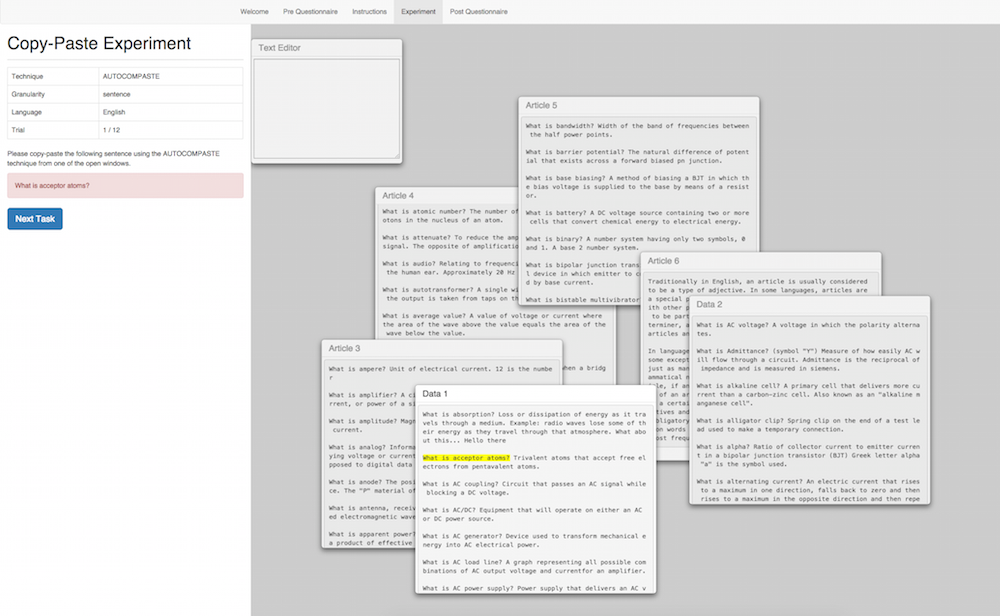

Dear participant , please read the instructions before the experiment.
We devised a new copy-and-paste technique called AutoComPaste. AutoComPaste allows you to copy-and-paste sentences and even paragraphs in a different manner from the traditional copy-and-paste techniques (CtrlC + CtrlV). Today, you'll be going through a series of trials which will help us evaluate its effectiveness and efficiency.
When you start the experiment, you will be greeted with an interface that looks like this.
In this text bar, you'll see a table which shows you 4 different attributes: "Technique", "Granularity", "Language" and the "Trial" number.
The technique shown represents the technique that you will be using to copy and paste (AutoComPaste vs Traditional).
The granularity tells you if you will be copying a paragraph, sentence or a phrase.
Last but not least, the language tells you which language the text that you are copying belongs to. (English vs Latin)
Just below the set of instructions, there is a red box. The text that has to be reproduced is reflected in the red box.
When you are done, press the Next Task button and the next set of experiment will appear.
Experiment window
In this area, you'll notice a text editor, along with several text files. These text files contain the passages which contain the sentences/paragraph/phrases that you'll be copying from. The part in which you have to copy from, will be highlighted in yellow.
The text editor window is where you will be copying and pasting the text into. All windows in this area can be moved and dragged around.
When the AUTOCOMPASTE technique is active, typing three characters or more in the Text Editor will show a dropdown list of possible sentences that contain the characters/sentence that you have just entered, which are extracted from the contents of the open windows. Pressing the ↑ / ↓ buttons on the keyboard will scroll through the list of suggestions. Press enter to select a suggestion and the text editor will display the full selected sentence.
After selecting a sentence, pressing ← / → button right after pressing enter, you can delete/append the next few sentences of the article to the Text Editor. Pressing enter or space would mean pasting the final text to the system.
When the TRADITIONAL technique is active, you will have to search through the article windows for the text to be copied. The text that has to be copied will be highlighted in yellow.
You can use your traditional CtrlC + CtrlV to copy and paste the text into the text editor.
When you enter the experiment page, you will first undergo 12 trials. These 12 trials are for you to familiarise yourself with the techniques, as well as the procedure of the experiment.
When you're done with the initial practice trials, you will receive a notification to tell you that you will be proceeding on to the measured trials. At the end of every block, you will be given a break before proceeding on to the next block.
When you're ready to start the experiment, press the Next button.